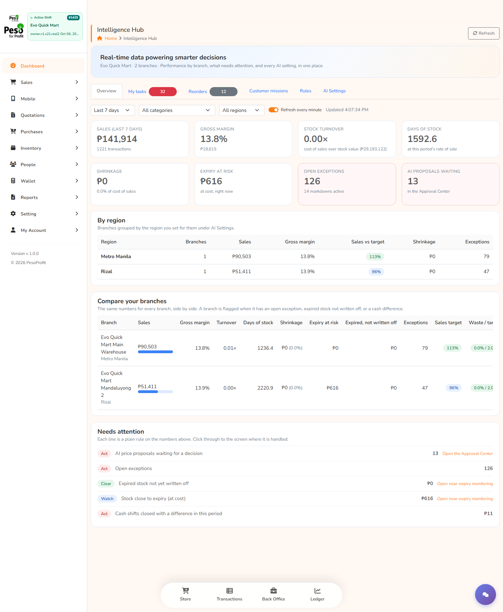

One place to see how every branch is doing right now, what needs attention, and what the AI is allowed to do. The AI proposes. Your rules check. A person decides.
See the hubRead the resultsThin margins leave little room for guesswork, and the day's problems are usually found after the day is over.
Fresh stock reaches its date before it sells, and a markdown that comes too late or too deep costs more than it saves.
Prices are set by habit. Nobody knows which items could carry a few more pesos, or which sell below what they cost to stock.
It is hard to tell whether a branch is doing well or badly compared with the others, until the month-end report.
Cash differences, unrecorded deliveries and expired stock are found late, and nobody is sure whose job it is.
Built into PesoWeb, so the numbers come from the same system that rings up the sales. Every screen below is the real screen.

The same shop twice, with and without the AI, same shoppers and same stock each day.
Margin floors, the deepest markdown, how often a price may change, who may approve what, and the on and off switches. The AI cannot override them.
It reads costs, stock, expiry and sales, then proposes markdowns and price changes through PesoWeb's own API, with its reasoning and a prediction it will be scored on.
Proposals wait in one Approval Center with the evidence. Everything is logged, and a change can be undone.